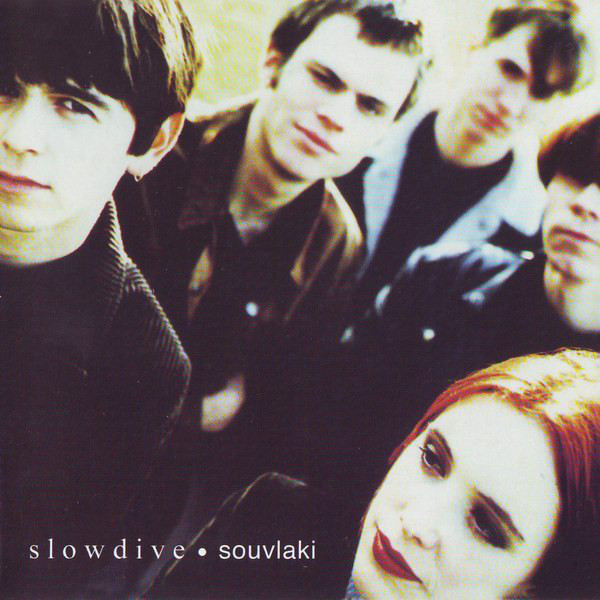

Years active: 1983–1997, 2007–present Formed: Dublin, Ireland
Years active: 1989–1995, 2014–present Formed: Reading, England Members: Top-rated album: 
Years active: 1988–1996, 2001, 2014–present Formed: Oxford, England
Years active: 1987–1996, 2015–2016 Formed: London, England